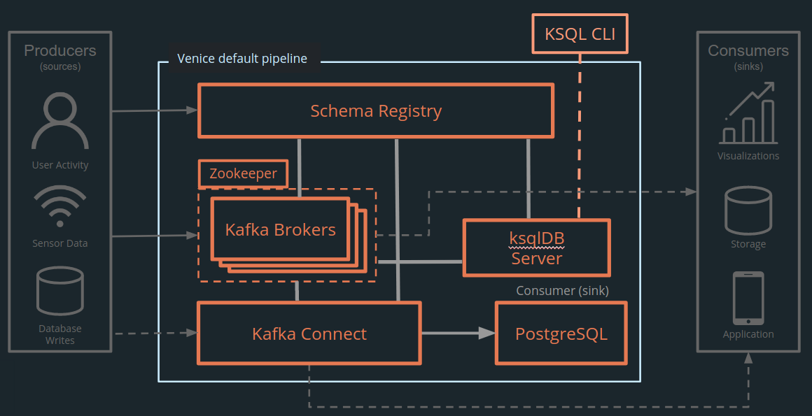
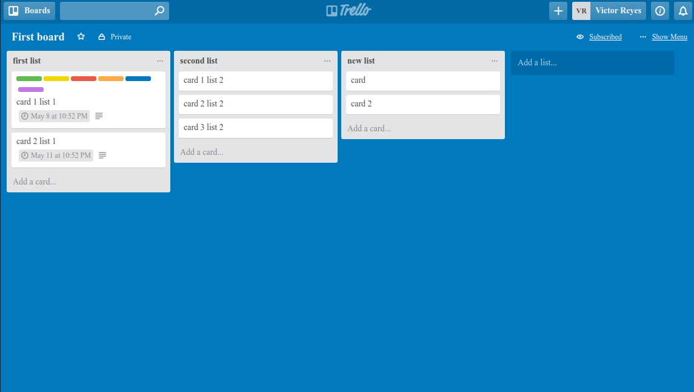
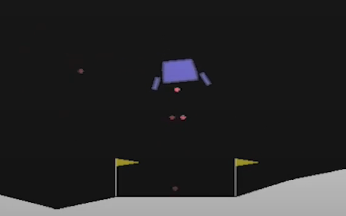
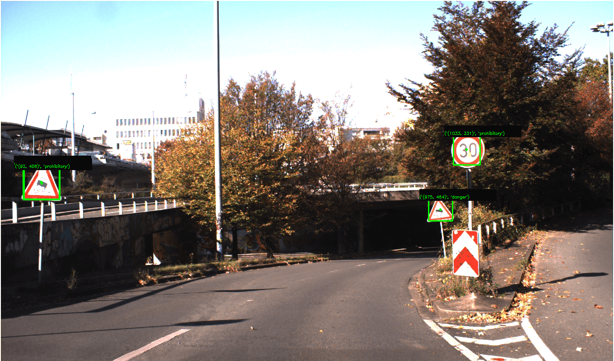

Hello! My name is
Nancy Trinh
.Projects
-

Stream processing pipeline framework
A framework that provides a default event stream processing pipeline and a command-utility to automate tedious configuration tasks. Built in collaboration with a remote team.
-

Postit
A blogging app that allows users to authenticate, create posts, comment on posts, add categories, vote on posts, and edit profile information. Built with Rails 6, Ruby 2.6.5, and Bootstrap 4.
-

Trello Clone
A Trello-like app built with a React and Redux front-end and Ruby on Rails backend. Built in collaboration with a remote team.
-

Simulated spaceship landings using reinforcement learning
A reinforcement agent that learns to safely land a simulated spaceship (OpenAI LunarLander-v2) using an approach adapted from Mnih et. al. Human-level control through deep reinforcement learning, Nature 518, 2015.
-

Image recognition of road signs and traffic lights
A machine learning model that detects road signs and traffic lights from the German Traffic Sign Detection Benchmark. Achieved performance comparable with state-of-the-art classification techniques.